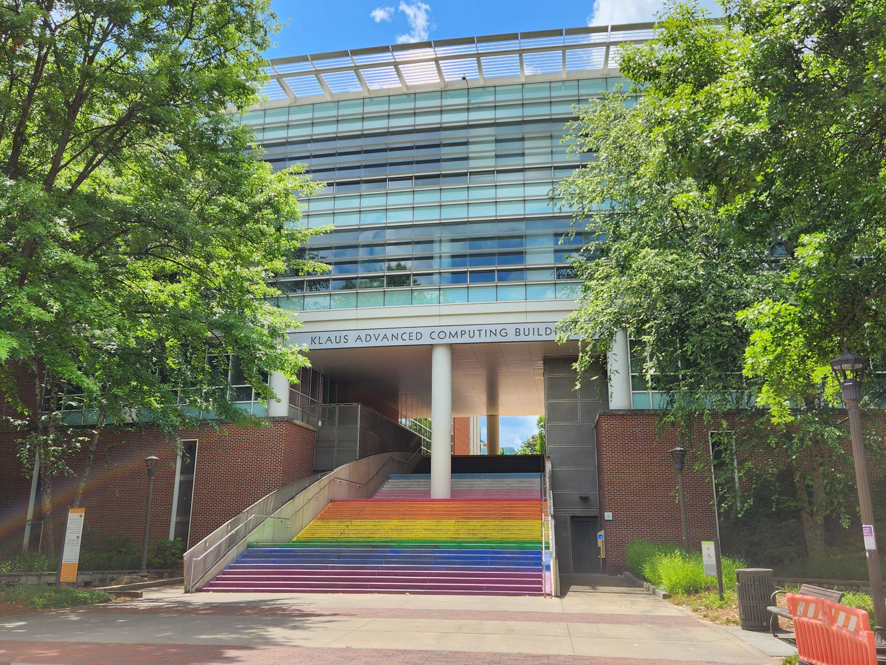
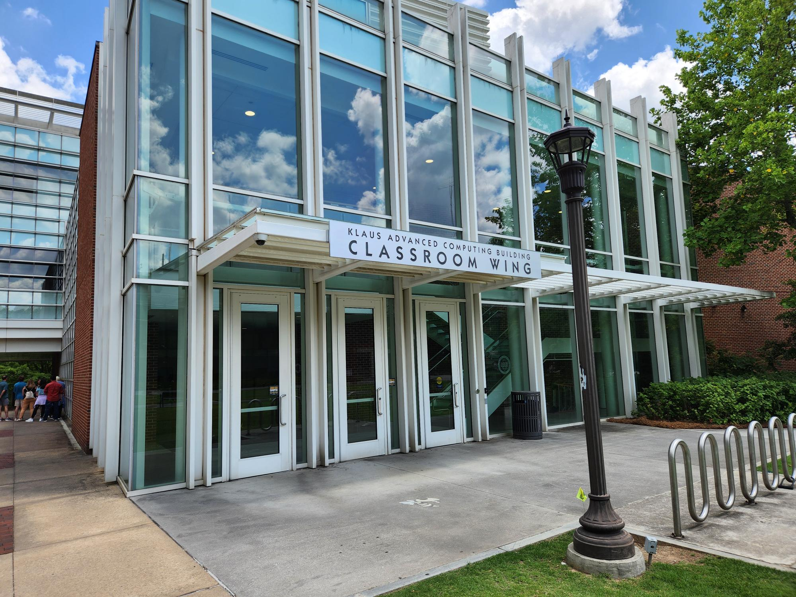
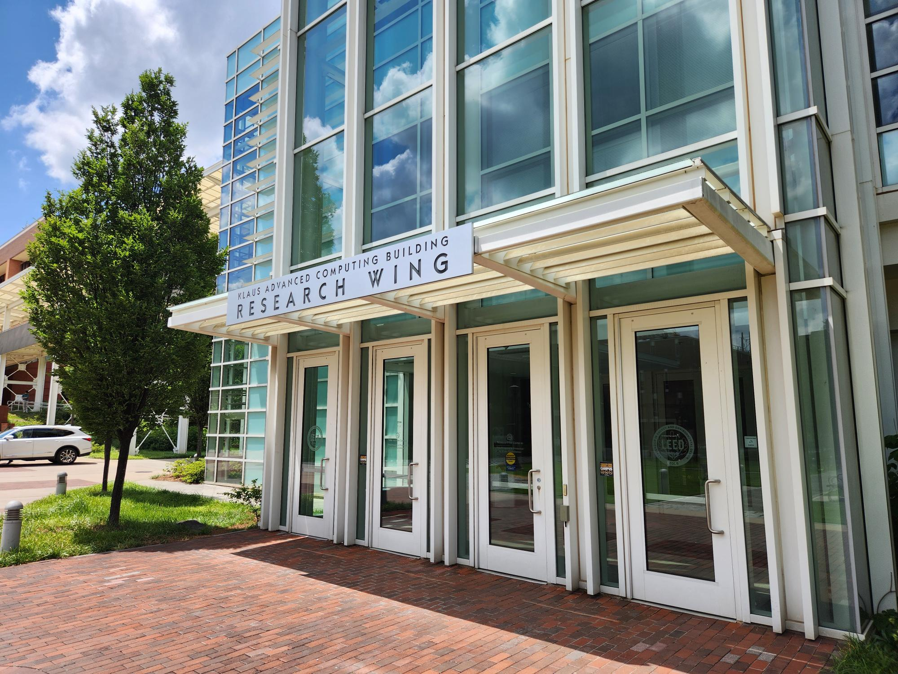
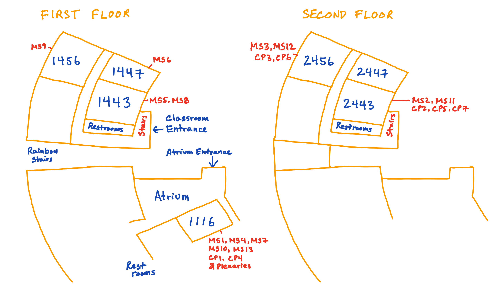
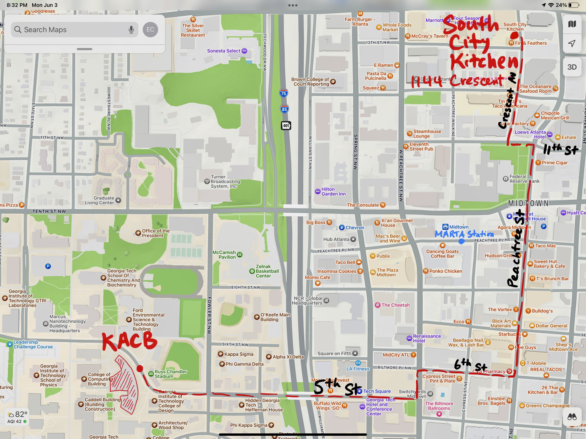
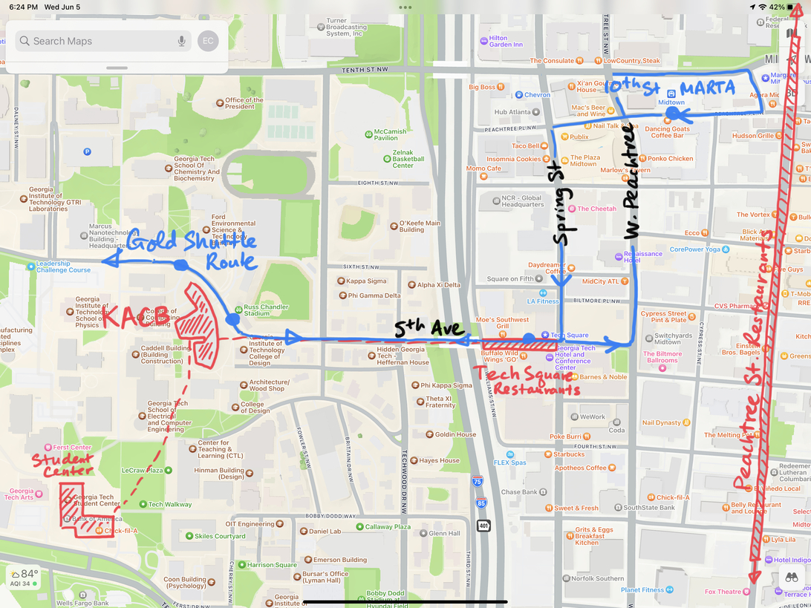

Directions
Conference Location
- Klaus Advanced Computing Building (KACB), Georgia Institute of Technology
- Map and Directions to KACB
- Map and Directions to Visitor Parking



KACB Floor Plan

Conference Banquet Location
- South City Kitchen Midtown
- Georgia Tech Stinger Shuttle The online/web map has "live shuttle locations" and that you should only board the Gold route buses

Lunch options:
- The student center: The student center is 8 minutes away and has a variety of student food options on the first and second floors. From KACB, walk towards Tech Green and the student center is the building behind the Campanile Fountain.
- The Tech Square: Tech Square is 10 minutes away and also has many dining options, mostly on 5th St between Williams St and Spring St.
Dinner options:
-
Midtown Atlanta offers many fantastic dining options. The main stretch is along Peachtree St NE (not to be confused with West Peachtree St NE runs parallel two blocks west) between North Avenue and 15th Street. Note that many restaurants are closed Mondays.
